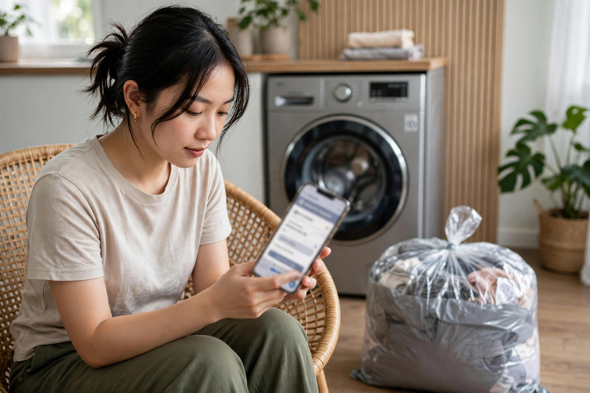

Website cho tiệm giặt ủi cần có gì: đặt lịch online, giao nhận tận nhà, khách quen đặt lại nhanh
Chủ tiệm giặt ủi đang tư vấn cho khách — khoảnh khắc quen thuộc trong tiệm giặt ủi, và là lý do website tiệm giặt ủi phải cho khách tự đặt lịch, tự chọn giờ lấy đồ và theo dõi được đồ giặt của mình đang ở bước nào.
Sáng thứ hai, bạn mở Zalo ra thấy một loạt tin nhắn chờ trả lời: "Shop ơi giặt 5kg đồ thường với 1 cái chăn ga bao nhiêu tiền ạ, chiều nay lấy được không ạ, shop có qua nhà lấy đồ không ạ?" Bạn đang dở tay xếp đồ cho mẻ giặt trưa, trả lời được một tin thì hai tin khác đã tới. Khách hỏi giá giặt thì bạn tra bảng giá, khách hỏi giờ lấy đồ thì bạn xem lịch giao nhận, khách hỏi đồ giặt xong chưa thì bạn chạy ra kệ tìm túi đồ của khách — mỗi đơn là một cuộc trò chuyện dài, mà cuối cuộc trò chuyện đó, có khi khách đã sang tiệm khác đặt vì bên đó bấm vài lần là xong. Tiệm giặt ủi của bạn không thiếu khách hỏi — chỉ thiếu một nơi để khách tự xem giá theo kg, tự đặt lịch lấy đồ, tự biết đồ của mình giặt tới đâu mà không cần chờ bạn trả lời từng tin.
Chủ tiệm giặt ủi nào cũng quen cảnh này — không phải vì khách không muốn giặt ở tiệm bạn, mà vì giặt ủi là dịch vụ người ta cần đúng giờ: đồ đi làm cần lấy trước sáng mai, chăn ga cần trả trước cuối tuần, vest cần lấy kịp buổi tiệc tối. Ngay dưới đây, mình sẽ cùng bạn bóc tách vì sao tiệm giặt ủi đông khách hỏi vẫn mất đơn, những mục một website cho tiệm giặt ủi thực sự cần có, và cách bạn tự kiểm tra trước khi bỏ tiền làm web.
Vì sao tiệm giặt ủi đông khách hỏi vẫn mất đơn: ba lỗi quen thuộc
Lỗi thứ nhất là giá giặt tính theo kg, theo kiện, khách nhìn bảng giá dán ở tiệm thì hiểu, nhìn qua tin nhắn thì không. Một đơn giặt ủi gồm nhiều loại đồ: đồ thường tính theo kg, chăn ga tính theo cái và theo kích cỡ, vest và áo dài tính theo cái, giặt khô tính riêng — khách nhắn hỏi "giặt 5kg đồ thường với 1 cái chăn ga bao nhiêu tiền" thì bạn phải hỏi lại chăn ga loại nào, đồ thường có món nào cần giặt khô không, có cần ủi riêng không. Mỗi câu hỏi là một lần chờ, mà khách đặt giặt ủi thì đang cần biết ngay tổng tiền là bao nhiêu, có vừa túi tiền không, có kịp giờ lấy đồ không. Giá không hiện rõ ngay lúc khách cần thì khách sang tiệm khác có giá ghi sẵn.
Lỗi thứ hai là lấy đồ và trả đồ hẹn qua tin nhắn dễ sót giờ và nhầm địa chỉ. Một đơn giặt ủi có hai chuyến đi: một chuyến qua nhà lấy đồ bẩn, một chuyến trả đồ đã giặt sạch — mỗi chuyến gồm ngày nào, khung giờ nào, địa chỉ nào, số điện thoại người nhận. Qua tin nhắn, các chi tiết này nằm rải rác trong cả chục tin nhắn qua lại, bạn đọc sót một dòng là qua lấy đồ lúc khách không có nhà, trả đồ nhầm địa chỉ, hoặc tới trả đồ mà khách chưa về — mà giặt ủi là dịch vụ đúng giờ, giao sai một lần là khách không quay lại lần sau. Chưa kể tin nhắn dồn vào giờ cao điểm: chiều tối, mấy khách cùng đặt lấy đồ cho sáng mai, bạn trả lời người này thì người kia đang chờ, tới lúc bạn nhắn lại "shop qua lấy đồ lúc 6 giờ chiều ạ" thì khách đã đặt chỗ khác.
Lỗi thứ ba là khách không biết đồ giặt của mình đang ở bước nào nên cứ nhắn hỏi "xong chưa". Khách gửi đồ đi giặt rồi thì lo: đồ của mình đã giặt chưa, sấy xong chưa, bao giờ trả. Không có chỗ nào để khách tự xem trạng thái đơn, họ chỉ còn cách nhắn tin hỏi bạn — mà bạn đang dở tay với mẻ giặt thì không trả lời ngay được, khách chờ lâu lại tưởng tiệm quên đơn của mình. Một tiệm giặt ủi nhỏ, mỗi ngày vài chục đơn, mà đơn nào khách cũng nhắn hỏi một lần thì cả ngày bạn chỉ ngồi trả lời tin nhắn, không còn thời gian giặt đồ.
7 mục một website tiệm giặt ủi thực sự cần có
Một website cho tiệm giặt ủi không cần nhiều trang, cũng không cần hiệu ứng cầu kỳ. Nó cần đúng những mục dưới đây — mỗi mục giải quyết một câu hỏi cụ thể mà khách luôn hỏi trước khi bấm đặt lịch.
1. Đặt lịch giặt online — chọn dịch vụ, chọn ngày giờ lấy đồ
Khách đặt giặt ủi hiếm khi vào web để "xem giặt ủi chung chung" — họ vào vì một nhu cầu cụ thể: đống đồ đi làm cần giặt trước sáng mai, chăn ga cần giặt trước cuối tuần, vest cần giặt khô kịp buổi tiệc tối. Web phải cho họ chọn dịch vụ trước rồi mới tới chi tiết: giặt thường, giặt khô, giặt chăn ga, ủi riêng — mỗi dịch vụ ghi rõ tính theo kg hay theo cái. Khách chọn ngày lấy đồ và khung giờ lấy đồ ngay lúc đặt: sáng 8–10 giờ, trưa 11–13 giờ, chiều 16–18 giờ, kèm ô ghi số lượng hoặc số kg ước chừng, địa chỉ lấy đồ và số điện thoại. Khách đặt một lượt là ra đúng lịch lấy đồ của mình, không phải nhắn tin hỏi từng câu một.
2. Bảng giá theo kg ghi rõ, phụ phí tách riêng — khách tự tính được tổng tiền trước khi đặt
Mỗi dịch vụ giặt cần ghi rõ giá ngay dưới tên dịch vụ: giặt thường bao nhiêu một kg, giặt khô bao nhiêu một cái, chăn ga theo kích cỡ giá bao nhiêu, vest và áo dài tính theo cái giá bao nhiêu. Phụ phí ghi tách riêng: giặt gấp lấy trong ngày cộng bao nhiêu, ủi riêng cộng bao nhiêu, giặt đồ da và đồ lông vũ cộng bao nhiêu — mỗi thứ cộng bao nhiêu, hiện rõ lúc khách chọn, để tổng tiền hiện ngay trước khi bấm đặt. Khách đặt giặt ủi thường có ngân sách trong đầu, họ cần biết ngay đống đồ của mình giặt hết bao nhiêu, không phải nhắn hỏi giá rồi chờ bạn trả lời. Giá ghi rõ còn có một tác dụng khác: khách so sánh gói giặt thường với gói giặt khô, thấy đồ vest giặt khô chỉ thêm một khoản nhỏ mà giữ được form áo, họ tự chọn gói tốt hơn — bạn không cần tư vấn thêm câu nào.
3. Giao nhận tận nhà — chọn khung giờ lấy đồ và trả đồ ngay lúc đặt
Khách chọn khung giờ lấy đồ và khung giờ trả đồ ngay lúc đặt lịch: lấy đồ sáng thì trả đồ chiều hôm sau, lấy đồ chiều nay thì trả đồ sáng ngày kia, kèm ô ghi rõ địa chỉ lấy đồ, tên người giao đồ và số điện thoại người nhận. Ghi rõ phí giao nhận theo từng khu vực, đơn từ bao nhiêu kg thì miễn phí giao nhận, và thời gian trả đồ cho từng dịch vụ: giặt thường trả sau 24 giờ, giặt gấp trả trong ngày và cộng phụ phí — đơn nào cần giặt gấp thì hiện rõ ngay lúc khách chọn giờ, không để khách đặt xong mới biết đồ không kịp giờ cần. Địa chỉ lấy đồ, tên người nhận, số điện thoại người nhận ghi ngay trong form đặt, để tiệm nhìn vào đơn là biết chuyến nào lấy đồ ở đâu, chuyến nào trả đồ tuyến nào. Mục này quan trọng nhất với giặt ủi: đồ phải tới tay khách đúng giờ đã hẹn, lấy muộn thì khách không có đồ mặc, trả muộn thì khách lỡ việc.
4. Theo dõi trạng thái đơn — đã nhận đồ, đang giặt, đã sấy, đang giao
Khách gửi đồ đi giặt rồi thì cần biết đồ của mình đang ở bước nào: đã nhận đồ, đang giặt, đã sấy, đang giao. Web cập nhật trạng thái từng đơn, khách mở web là thấy đồ mình đang ở bước nào, không cần nhắn hỏi "đồ em giặt xong chưa". Mỗi bước đổi trạng thái thì web cập nhật ngay, kèm giờ trả đồ dự kiến để khách biết mà sắp xếp ở nhà nhận đồ. Mục này giải phóng nhiều thời gian nhất cho chủ tiệm: thay vì trả lời từng tin nhắn hỏi trạng thái đơn, bạn chỉ cần cập nhật trạng thái đơn trên web, khách tự xem. Tiệm nào làm khách tự xem được trạng thái đơn thì khách yên tâm hơn hẳn, vì họ thấy đồ của mình đang được xử lý, không phải nằm im một chỗ không ai ngó tới.
5. Giỏ hàng và đặt hàng COD — khách đặt xong trong một phút, trả tiền khi nhận đồ
Khách đặt giặt ủi thường đặt trong những khoảng thời gian vụn vặt: lúc vừa gom xong giỏ đồ bẩn tối chủ nhật, lúc đang trên đường về sau giờ làm, lúc tan ca mới nhớ mai cần vest sạch đi họp. Quy trình đặt lịch vì vậy phải ngắn nhất có thể: chọn đúng dịch vụ, chọn ngày và giờ lấy đồ, điền tên, số điện thoại và địa chỉ là xong — vài lần chạm, không cần tạo tài khoản, không cần chuyển khoản trước. Khách nhận đồ đã giặt sạch mới trả tiền (COD) đúng thói quen mua bán quen thuộc, không phải lăn tăn chuyển khoản cho một tiệm lạ vì một đống đồ bẩn. Form đặt lịch chỉ giữ những ô thật cần thiết: bỏ bớt những trường không cần thiết, để lại đúng những gì bạn cần để qua lấy đồ đúng giờ và trả đồ đúng hẹn.
6. Ảnh thật và đánh giá của khách đã giặt — ghi rõ giặt món gì, trả có đúng hẹn không
Với tiệm giặt ủi, đánh giá có giá trị nhất không phải là "giặt sạch lắm ạ" mà là những dòng ghi rõ thông tin thật: giặt món gì, chăn ga hay vest, giao có đúng giờ đã hẹn không, đồ trả về có sạch, có thơm, có phẳng không, vest giặt khô về có giữ được form áo không. Mục này cần ghi rõ món đồ đã giặt, giờ trả thực tế và cảm nhận về chất lượng giặt — kèm được ảnh thật đồ đã giặt xong (với sự đồng ý của khách) thì tốt hơn nữa. Năm đến bảy đánh giá như vậy, đặt ngay dưới mục đặt lịch giặt online, có tác dụng hơn cả một trang giới thiệu dài: khách đang phân vân không biết tiệm giặt có làm hỏng đồ của mình không sẽ đối chiếu món đồ của mình với món đồ trong đánh giá và tự tin bấm đặt, thay vì nhắn hỏi bạn rồi chờ trả lời.
7. Đặt lại trong một phút cho khách quen — bấm "đặt lại gói này", chỉ chọn lại ngày lấy đồ
Khách cũ từng đặt một gói giặt thì lần sau chỉ cần bấm "đặt lại gói này": gói giặt quen, số kg quen, địa chỉ lấy đồ đã lưu sẵn, khách chỉ chọn lại ngày lấy đồ và khung giờ lấy đồ, sửa địa chỉ nếu cần, rồi bấm đặt — xong trong một phút, không cần gọi điện, không cần mô tả lại đống đồ từ đầu. Mục này giữ khách quen hiệu quả nhất trong cả bảy mục: đồ đi làm giặt mỗi tuần, chăn ga giặt mỗi tháng, vest giặt trước mỗi buổi tiệc — khách quay lại đều đặn, mà mỗi lần quay lại họ đều thấy việc đặt giặt dễ hơn lần trước. Tiệm nào làm khách quen đặt lại dễ thì khách quen ở lại, không cần quảng cáo thêm.
👉 Xem thư viện mẫu web theo ngành nghề tại Web Khởi Nguồn
Khách đặt lịch giặt ủi trên điện thoại — chọn dịch vụ, chọn giờ lấy đồ, xong trong một phút, không cần nhắn tin hỏi giá từng món.
Khách bận rộn và khách giặt định kỳ dùng website theo hai cách hoàn toàn khác nhau
Khách bận rộn — nhân viên văn phòng vừa tan ca, đống đồ đi làm cần giặt trước sáng mai, hay người vừa nhớ ra mai cần vest sạch đi họp — vào web của bạn với mục đích rất thực dụng: xem dịch vụ nào còn nhận lấy đồ tối nay, chọn giờ lấy đồ gần nhất, đặt xong trong một phút rồi tắt đi. Với nhóm này, đặt lịch giặt online, khung giờ lấy đồ, giá theo kg và giỏ hàng đặt nhanh là quan trọng nhất; họ quyết trong vài giây bằng cảm xúc, thấy lấy đồ đúng giờ, trả đồ đúng hẹn là bấm đặt, không cần đọc dài, không cần tư vấn nhiều. Nhóm này cũng là nhóm quay lại thường xuyên nhất — mỗi tuần có đồ bẩn là một lần họ mở lại web của bạn.
Khách giặt định kỳ — gia đình giặt chăn ga mỗi tháng, nhà nghỉ và khách sạn nhỏ giặt khăn ga hàng tuần, quán cà phê giặt khăn trải bàn theo quý — lại vào web với tâm thế dò xét. Họ đọc kỹ bảng giá theo kg, so sánh giá giặt thường với giặt khô, xem đồ trả về có đúng hẹn không và đọc đánh giá của người từng giặt món giống mình trước khi quyết định. Với nhóm này, bảng giá theo kg, giao nhận tận nhà, theo dõi trạng thái đơn và đánh giá ghi rõ món đồ và giờ trả là bốn thứ quan trọng nhất; thiếu một trong bốn, họ sẽ sang tiệm khác. Hiểu hai hành vi này, bạn sẽ biết vì sao website tiệm giặt ủi phải vừa có đủ đặt lịch nhanh, giờ lấy đồ và giá theo kg cho khách bận rộn, vừa có giao nhận rõ ràng, theo dõi trạng thái đơn và đánh giá rõ ràng cho khách giặt định kỳ — thiếu một phía là mất một nửa cơ hội.
Gói website trọn gói 586.000đ tại Web Khởi Nguồn gồm những gì cho tiệm giặt ủi?
Nghe giá 586.000đ, nhiều chủ tiệm nghi ngờ ngay: rẻ vậy thì web làm ra chắc chỉ để "cho có", được vài hôm lại lỗi. Nghi ngờ đó có cơ sở nếu giá rẻ đến từ việc cắt xén tính năng. Còn ở đây, giá thấp đến từ cách làm: tiệm nhỏ chỉ cần một website bán hàng đúng nhu cầu, cấu trúc trang cho cửa hàng giặt ủi đã được đóng gói thành quy trình chuẩn, đội ngũ không phải ngồi lập trình lại từ con số không cho từng khách, nên chi phí dồn vào đúng phần nội dung và giao diện riêng của tiệm bạn. Bạn có thể xem chi tiết tại bảng giá và mục gói 586.000đ gồm những gì trên trang chủ.
Cụ thể với một tiệm giặt ủi, gói làm web bán hàng 586.000đ (giá gốc 2.000.000đ) bàn giao gồm: website theo đúng ngành giặt ủi, với trang giới thiệu tiệm, trang dịch vụ xếp theo loại đồ giặt và theo kg, bảng giá theo kg, ngày và khung giờ lấy đồ và trả đồ, trang liên hệ; giỏ hàng và đặt hàng COD để khách đặt xong trong vài lần chạm, nhận đồ mới trả tiền; cụm nút gọi — Zalo — bản đồ nổi một chạm để khách hỏi nhanh "chiều nay shop qua lấy đồ được không" và tìm đường tới tiệm. Web dựng xong trong 1–3 ngày, bảo hành kỹ thuật trọn đời. Chính sách làm thử trước, hài lòng mới thanh toán, không cần đặt cọc — bạn xem trước bản dựng của chính tiệm mình rồi mới quyết định. Khi tiệm mở thêm chi nhánh hay cần bán hàng bài bản hơn, bạn có thể nâng cấp lên gói website cao cấp mà không phải làm lại từ đầu.
Cách tự kiểm tra một website tiệm giặt ủi trước khi quyết định làm
Dù bạn làm web ở đâu, hãy tự kiểm tra bằng trải nghiệm của chính khách hàng, với bốn bước đơn giản sau. Bước một: lấy điện thoại của bạn, bật 4G, đóng vai một khách cần giặt 5kg đồ thường và lấy đồ trước sáng mai. Đếm số lần chạm từ lúc trang mở tới lúc bạn đặt xong lịch — nếu phải qua quá 4 đến 5 lần chạm, hoặc phải nhắn tin hỏi giá theo kg, hỏi giờ lấy đồ thì mới đặt được, trang đó đang làm mất đơn mỗi ngày. Bước hai: thử chọn một dịch vụ giặt theo loại đồ, xem giá theo kg, phụ phí giặt gấp và ô ghi địa chỉ lấy đồ có hiện rõ không; thử đặt một đơn giặt gấp lấy trong ngày, xem web có báo phụ phí và gợi ý khung giờ lấy đồ còn trống không. Bước ba: thử đặt một đơn giặt thường, xem form có ô ngày lấy đồ, ô khung giờ lấy đồ và trả đồ, tên người nhận không; gửi thử một đơn hàng qua giỏ hàng COD, xem thông tin có tới tay bạn đầy đủ tên, số điện thoại, địa chỉ, dịch vụ giặt, số kg và giờ lấy đồ khách đã chọn không. Bước bốn: bấm thử nút gọi và nút Zalo ngay trên trang, xem có ra đúng số của tiệm không; mở lại trang bằng 4G vào đúng giờ cao điểm tối, xem trang và ảnh tiệm có hiện nhanh không — khách của bạn cũng đang mở trang trong đúng điều kiện như vậy, thường là lúc họ vừa gom xong giỏ đồ bẩn tối chủ nhật và cần đặt giặt gấp.
Quay lại cảnh sáng thứ hai ở đầu bài: bạn không thể làm khách hết vội ngay, nhưng bạn có thể khiến một người đang lo cho đống đồ đi làm ngày mai tự xem được giá giặt theo kg, chọn được giờ lấy đồ và đặt xong trong một phút, không cần chờ ai trả lời tin nhắn. Giá theo kg rõ ràng, giờ lấy đồ và trả đồ đúng hẹn, theo dõi được đồ giặt đang ở bước nào và nhận đồ mới trả tiền — lúc đó tin nhắn còn lại chỉ là "shop ơi đồ giặt sạch thơm lắm, tuần sau em lại đặt nhé", đúng kiểu tin nhắn mà chủ tiệm giặt ủi nào cũng muốn nhận. Nếu bạn đang cân nhắc làm website cho tiệm của mình, cứ xem trước các mẫu theo ngành nghề, đối chiếu với bảy mục trong bài này, rồi quyết định cũng chưa muộn.
Muốn shop của bạn có website như vậy?
Xem trước các mẫu demo theo ngành nghề, ưng mẫu nào làm mẫu đó — trọn gói 586.000đ, xem mẫu trước khi quyết định.